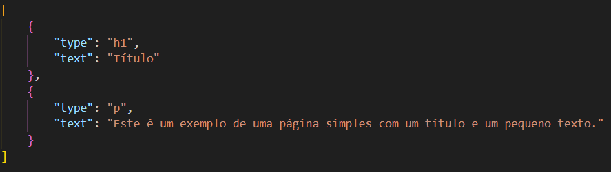

Se estás aqui, é por uma de duas razões:
Esta "documentação" destina-se aos no-life que cá se encontram pela segunda razão.
Cada página é representada por um ficheiro .json, cuja estrutura é da forma:
O ficheiro começa sempre com uma array que irá conter os elementos.
Cada elemento é um objeto que terá vários valores que definem a forma como este irá ser apresentado na página.
Um elemento pode ter elementos por dentro, através da chave "insides", cujo valor será uma array de outros elementos.
Como explicado anteriormente, cada elemento tem várias propriedades, com muitas delas representando diretamente a uma propriedade html. Se não sabes html, não sei bem o que estás aqui a fazer, mas agradeço o esforço.
As propriedades que são utilizadas de um elemento são:
(string) A propriedade "href" de um elemento <a>. Uma string que representa:
Tipo 0 - Um link para outra página (dentro ou fora da wiki)
Tipo 1 - Uma referência ao código de faina (estrutura: "página,zoom")
Tipo 2 - Uma ligação a outra parte da mesma página.
Então acabaste de fazer uma página e queres adicioná-la à wiki, para estar com as outras.
Isso é bem simples, basta salvar a página e colocar o ficheiro json na pasta "pages" do diretório do site, mas vais ver que não vais conseguir pesquisar pela tua página na barra de pesquisa.
Para teres a página a aparecer nas pesquisas é também bastante simples: só é preciso ir ao ficheiro "pages.json" e adicionar um par de chave e valor em que a chave será o nome da tua página(o nome do tópico que ela cobre, por exemplo) e em que o valor será o nome do ficheiro json da tua página(sem a extensão json).
Achas que a documentação está fraca? Podes sempre editá-la se pensas que fazes melhor.
Precisas de mais ajuda? Mais informações.